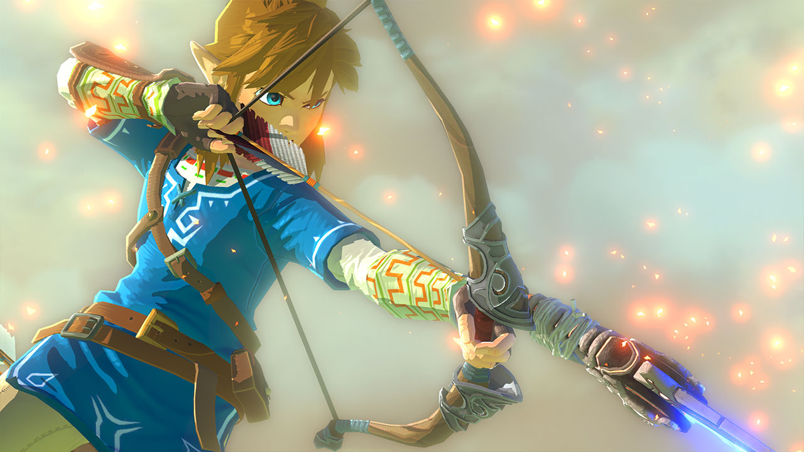
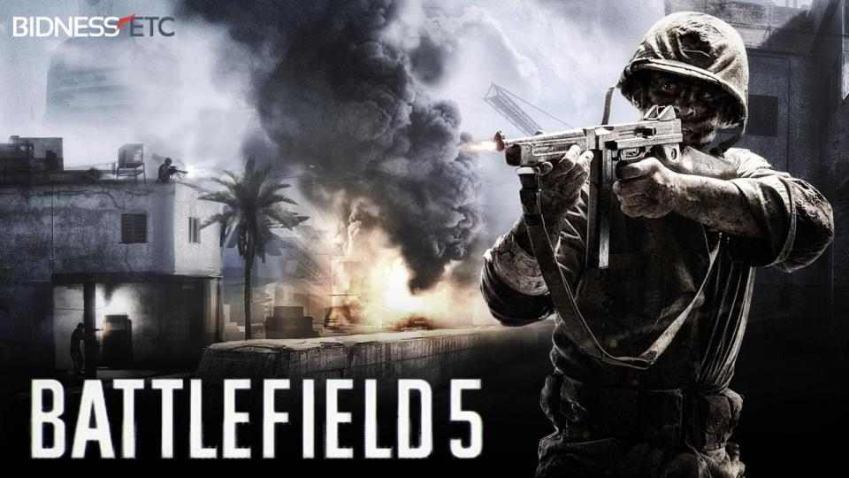
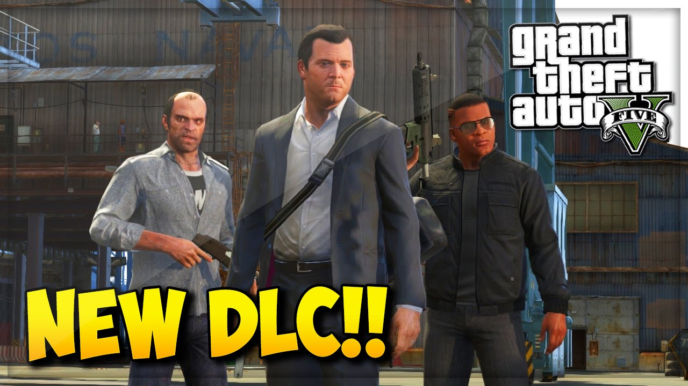
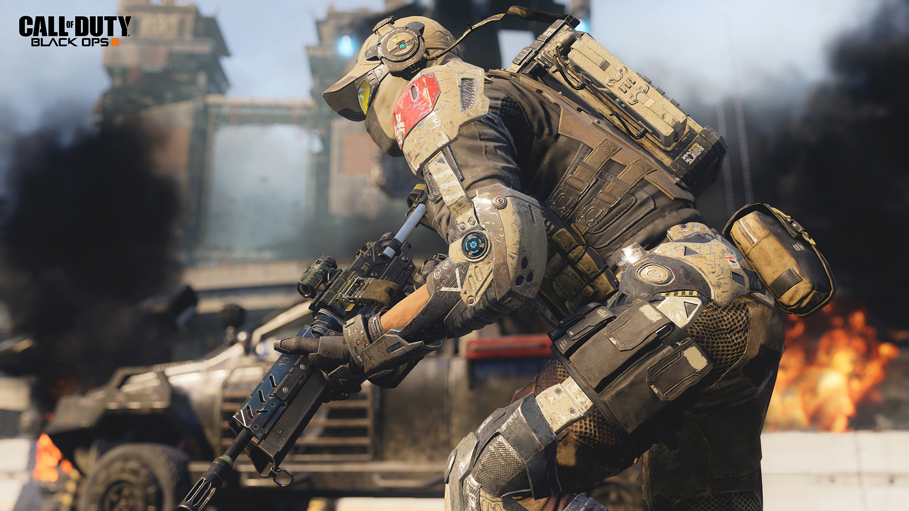

SAGAS
30 Años de The Legend of Zelda
Una de las sagas más influyentes de la historia de los videojuegos cumple en este 2016 que ya se acaba 30 años. En Solojuegos queremos rendir homenaje a The Legend of Zelda, repasando los juegos que ha dejado por el camino tras más
de dos décadas entre los mejores.

'It's dangerous to go Alone! Take this.' Es peligroso ir solo, toma esto. Traducción de la primera frase que pudimos leer en un The Legend of Zelda. Era el año 1986 en Japón (uno más tarde en occidente) y conocíamos por primera vez un compendio de píxels
unidos todos ellos que daban forma a un joven vestido con ropajes verdes: Link. La experiencia, además, ofrecía algo que nunca se había visto antes en el mundo de los videojuegos. Han pasado 30 años desde esa primera e influyente
aventura para NES, también la primera consola de Nintendo. Y el camino del héroe no se ha detenido en ningún momento en estos años, más bien al contrario. No ha parado de crecer hasta convertirse en una de las franquicias de mayor
prestigio dentro del mundo de los videojuegos.
Zelda se retrasa a 2017
El juego más esperado de Nintendo ha vuelto a sufrir un nuevo retraso en su lanzamiento. The Legend of Zelda para Wii U saldrá hasta el mes de marzo de 2017. Durante el reporte anual con inversionistas de la compañía japonesa, se confirmó la nueva fecha
aproximada de lanzamiento. Pero eso no es todo, ya que además se ha indicado que saldrá de forma simultánea en la nueva consola llamada hasta el momento NX. Durante E3 en el mes de junio habrá más información al respecto. No sería
la primera vez que Nintendo lanza un Zelda en 2 consolas al mismo tiempo, ocurrió con Twilight Princess en Gamecube y Wii. Originalmente se había dicho que el próximo Zelda saldría a finales de 2015.

Rumores de Battlefield 5 y de la Guerra Mundial
Se ha conocido que el nuevo titulo de la saga Battlefield podría estar ambientado en la primera guerra mundial, esto según una ficha del titulo que figuraba hace meses y que ahora ha vuelto a sonar con mucha fuerza según Joe Brammer, director de Battalion
1944, un juego que sitúa su acción en la Segunda Guerra Mundial. Todo inició cuando Brammer a través de su cuenta de Twitter decía que había podido ver cosas de Battlefield 5 y que se sentía “más que emocionado” con lo visto. Tal
fue la insistencia de los usuarios sobre el tema que Joe Brammer se vio obligado a borrar su tweet y escribir uno nuevo que decía: “¡Mi teléfono, mi Apple Watch y mi ordenador se están volviendo locos con las notificaciones y me
hacéis demasiadas preguntas! El tweet ha sido… ¡Un claro error por mi parte!”

Posible DLC para la historia de GTA V
Recientemente han surgido nuevos rumores acerca del esperado DLC de historia de GTA V y es que podría contar con el mismísimo CJ (protagonista de GTA San Andreas). Según se ha podido ver el DLC de historia de GTA V estaría protagonizado por un nuevo personaje
llamado Anthony Miller y ampliará el mapa de Los Santos con nuevas zonas que visitar como San Fierro y Las Venturas. Pero eso no es todo, y es que, según la citada fuente, el primer contenido descargable para la historia de GTA
V también incluirá actividades en casinos y carreras de caballo. Igualmente debemos esperar confirmación oficial por parte de Rockstar antes de ilusionarnos con el DLC de historia de GTA V. Teniendo en cuenta que el E3 2016 tendrá
lugar dentro de y pocas semanas

El sistema de control de Call of Duty: Infinite Warfare resultará familiar a los fans de Black Ops III
Cuando se presentó Call of Duty: Infinite Warfare sus responsables aseguraron que la vertiente multijugador de este nuevo shooter bélico supondría "la evolución del sistema de movimiento" de la serie COD, sin aportar más detalles al respecto.

Preguntados sobre esta cuestión en Twitter, si será un cambio radical o algo más parecido a la fluidez del combate en Black Ops III, el equipo de Infinity Ward ha afirmado: "Si jugaste a Black Ops III, nuestra versión de su fluido sistema de movimientos
encadenados te resultará natural". No han dicho nada más, así que tendremos que esperar, probablemente al E3 de Los Ángeles, para conocer al detalle todas las novedades del multijugador de Call of Duty: Infinite Warfare.